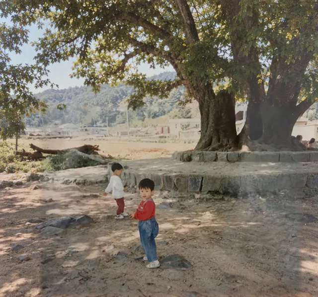
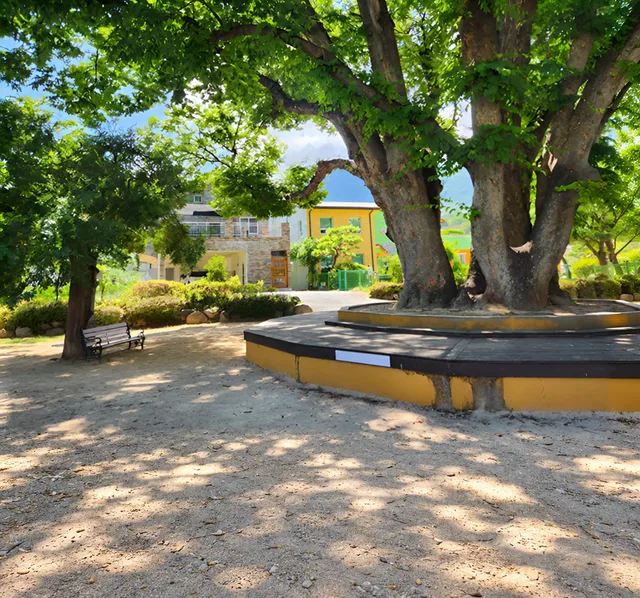

웅상아카이빙크리에이터조옥향
몇백 년, 그 자리를 지켰을 백동마을 당산나무 아래서


그때
양산시 소주동 백동마을 당산나무 앞
1995년, 양산시 소주동 백동초등학교 인근 당산나무 아래서 놀고 있는 동생과 나
지금
양산시 소주동 백동마을 당산나무 앞
2026년, 당산나무는 그 자리 그대로 마을 주민들의 마음의 쉼터로 편안한 자리를 내어주며 든든하게 계속 자리하고 있습니다.